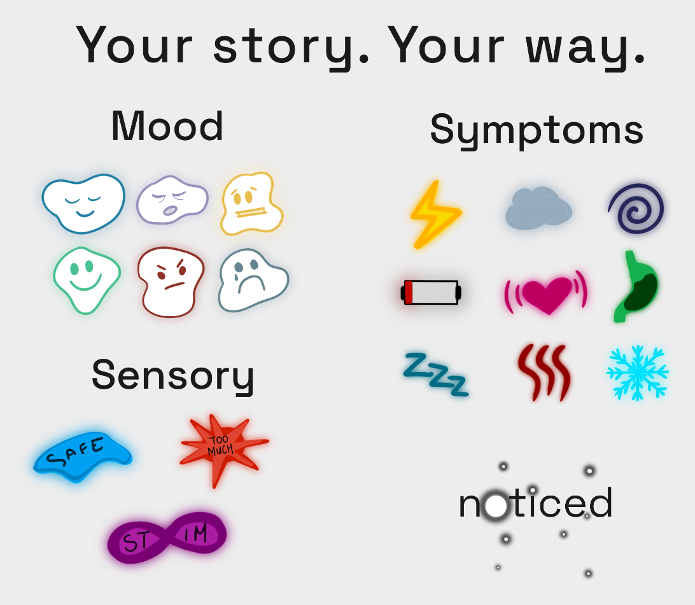
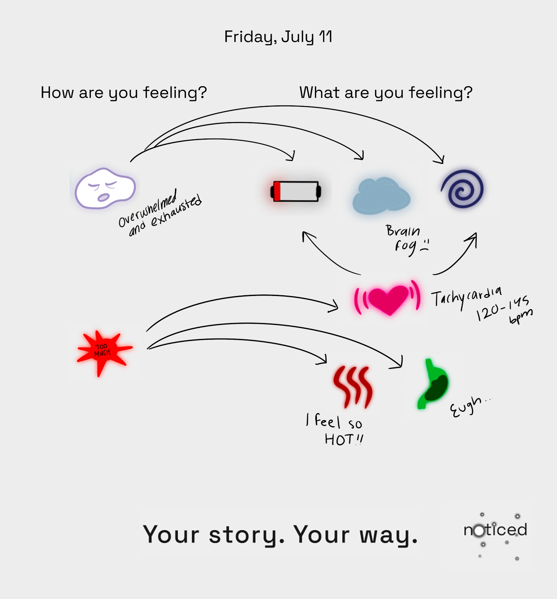
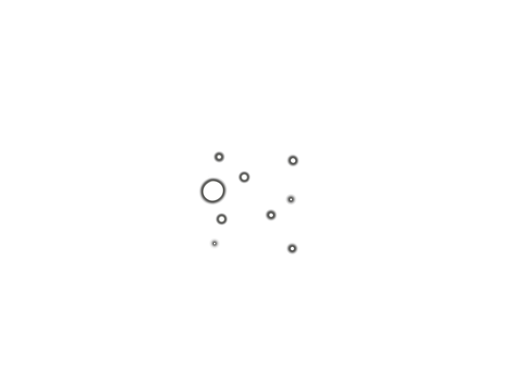

Noticed: Adaptive Symptom Tracking
A self-directed brand identity and system design project: a symptom tracker that doesn't punish you for missing a day, built for chronic illness, mental health, and neurodivergent communities, available as an app and on paper.
The Problem
Most symptom trackers are built around clinical precision and daily consistency. Both actively work against users on their worst days. When I looked at what was available, most trackers I found were subscription-based and built around daily streaks. Missing a day meant losing progress. People with chronic conditions, mental health diagnoses, or neurodivergent experiences are often the ones who need tracking most, yet the tools available punish them for missing entries or not fitting a standardized format.
I kept seeing the same pattern: people stopped tracking because the design made them feel like they were failing.
Project Context
This was a self-directed concept developed in HCI 595, covering the full arc of a brand and system: naming, visual identity, tagline, app UI, print design, and a custom icon set. The scope was intentionally broad. I wanted to test whether a single cohesive design language could hold across digital and analog touchpoints without losing accessibility.
The semester before this, I spent a qualitative research project interviewing disabled people about how they use online communities for support. That work shaped what I paid attention to here.
Scope included: brand naming and rationale, logo design and iteration, typography system, tagline development, app UI, bus stop advertisement, tote bag, journal mockup, custom sticker icon set, and a printable journal entry template.
Brand Identity
The name Noticed was chosen to reflect the emotional core of the project: being truly seen, without judgment or pressure. Tracking becomes a form of self-witnessing, separated from clinical obligation.
The logo places the wordmark inside a loose star field. The "o" becomes the brightest star, anchoring a subtle constellation that traces an abstract "N", a nod to both the brand's first letter and the non-linear reality of managing a fluctuating condition. Typography is set in Space Grotesk, chosen for its accessibility and visual fit with the space theme.
The constellation is not only decorative. The product helps users find patterns across scattered, non-linear data points, and the constellation is that idea drawn: points that only resolve into a shape once you have enough of them and step back. The identity describes what the product does.
The tagline "Your story. Your way." emerged from six iterations. It frames tracking as an act of storytelling and autonomy.
The options I set aside:
- "Chart your path."
- "Light your way."
- "Your journey, made visible."
- "Your journey, charted."
- "Your pattern matters."
- "Map your story."
The others describe what the tool does. "Your story. Your way." describes what the user keeps control of. That is why it won.


Color and contrast
The icon colors are soft pastels, chosen so that logging never overwhelms someone with sensory sensitivities. The logo works the other way. It uses high-contrast combinations so the mark stays readable and survives translation to print.
Design Decisions
- Icon-first logging: Symbols replace text-heavy forms to reduce cognitive load. Users select from a modular set representing moods, symptoms, and sensory states, with or without text labels depending on preference.
- Hybrid analog and digital: Printed journal pages can be scanned into the app, which uses image recognition to identify icons and add them to the user's log, making the system accessible on low-energy days or without a phone.
- Custom icon learning: Users can draw their own icons, name them in the app, and have them recognized and included in pattern summaries, accounting for the enormous variability of lived chronic experience.
- Pattern surfacing: The app skips streak mechanics and instead generates summaries highlighting symptom frequency and correlations over time, shareable with care teams.
- Privacy by default: Summary data is encrypted, and the user confirms the recipient before any summary reaches a care team or family member. This population has real reasons to be cautious about who sees their health data, so sharing is opt-in and confirmed at the point of sending, never automatic.



Brand Expression
The identity was extended across five touchpoints to test how the system held at different scales and contexts.
The bus stop advertisement leads with the logo and tagline at large scale against a dark field, atmospheric and legible from a distance. The tote bag uses only the constellation mark and tagline, stripping the wordmark to let the symbol stand alone. The journal mockup shows the app's companion tablet experience alongside a physical notebook, grounding the digital concept in the tactile habits of its users.




What I'd want to test
Scanning a printed page into the app is the most technically ambitious part of the concept, and it is unproven. Recognizing icons across handwritten, user-invented symbols is a hard problem. I would want to test recognition reliability before committing to it as the core of the hybrid system.
Custom icon learning carries the same dependency. It only works if the recognition holds up, so the two features stand or fall together.
Reflection
The hardest part of this project was a tension I never fully resolved: flexibility against simplicity. The whole point was a system that could stretch to fit wildly variable conditions, so I kept adding ways to customize it. Custom icons, optional text labels, different logging paths. But every option I added was also a decision the user had to make, and this is a system for people whose hard days are the ones where making decisions is the difficult part.
If I came back to Noticed, that is the line I would work on. Where does a choice give someone real control, and where is it just one more thing to manage. I do not think there is a single right answer, since it probably shifts with how someone is doing on a given day, and designing for that kind of moving target is the part I want to keep learning how to do.